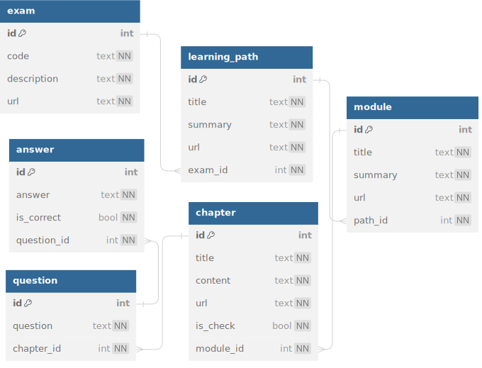

import vecs
import re
import sys
import os
import json
from dotenv import load_dotenv
from typing import List, Tuple
from llama_index.embeddings import HuggingFaceEmbedding
from llama_index import ServiceContextWe’ve successfully stored our contextual data in a free Supabase instance. Our next step is to evaluate how LLMs perform on Power BI Learning Path questions. In this post, we are going to create embeddings for both questions and contexts.
The Need for a Vector Database:
PostgreSQL offers an open-source extension called pgvector that allows efficient storage and similarity searches for vectors. However, our existing database schema requires careful consideration for embedding insertion. While the llamaindex solution creates a defined schema using SupabaseVectorStore, we’ll opt for vecs, a Python client designed to manage and query vector stores in PostgreSQL as an simplified abstraction above pgvector.
Part 2 Goals:
- Read Data: We’ll retrieve the scraped content stored within Supabase (PostgreSQL).
- Embed Everything: We’ll create embeddings for contextual content, questions, and questions with their possible answers.
- Store Embeddings: We’ll store the generated embeddings and metadata back in Supabase.
References
Import libraries
import llama_index
print(llama_index.__version__)
import transformers
print(transformers.__version__)0.9.11.post1
4.35.2Credentials
if "google.colab" in sys.modules:
from google.colab import userdata
IS_COLAB = True
supabase_host = userdata.get("SUPABASE_HOST")
supabase_pass = userdata.get("SUPABASE_PASS")
else:
load_dotenv()
supabase_host = os.environ.get('SUPABASE_HOST')
supabase_pass = os.environ.get('SUPABASE_PASS')
DB_CONNECTION = f"postgresql://postgres:{supabase_pass}@{supabase_host}:5432/postgres"Embedding Models
This work leverages Jina AI’s “world’s first open-source 8K text embedding model”. While testing on my 8GB GPU model, I encountered memory limitations when the context exceeded 2,500 words.
emb_models = {
"jinaai/jina-embeddings-v2-small-en":
{"size": 512, "collection": None, "table": None, "embed_model": None},
"jinaai/jina-embeddings-v2-base-en":
{"size": 768, "collection": None, "table": None, "embed_model": None},
#"jinaai/jina-embeddings-v2-large-en":
#{"size": 2048, "collection": None, "table": None, "embed_model": None},
}Create tables and collections to store embeddings using vecs
vx = vecs.create_client(DB_CONNECTION)for _model in emb_models.keys():
_data = emb_models[_model]
_data["table"] = _model.split("/")[-1].replace("-", "_").replace(".", "_")
_data["collection"] = vx.get_or_create_collection(name=_data["table"], dimension=_data["size"])Get Content from Database
Let’s get the content we scraped in Part 1.
from sqlalchemy.ext.automap import automap_base
from sqlalchemy.orm import Session
from sqlalchemy import create_engine
from sqlalchemy.engine.row import Row
from sqlalchemy.engine.result import RMKeyView
from sqlalchemy import select, text, func, and_, literal_column, cast, StringConnect to existing tables
This is the model we created in Part 1.

Fig 1. Model’s ERD. (Created with https://dbdiagram.io/)
Create connections to existing tables
engine = create_engine(DB_CONNECTION)
Base = automap_base()
Base.prepare(autoload_with=engine)
# matching that of the table name.
Exam = Base.classes.exam
Learning = Base.classes.learning_path
Module = Base.classes.module
Chapter = Base.classes.chapter
Question = Base.classes.question
Answer = Base.classes.answer
session = Session(engine)/tmp/ipykernel_275/1542308513.py:4: SAWarning: Did not recognize type 'vector' of column 'embedding'
Base.prepare(autoload_with=engine)Three ways to query the database with SQLAlchemy
Before we continue, let’s explore some ways we can query the database. #### 1. Using select
stmt = select(Question).where(Question.id <= 2)
with engine.connect() as conn:
result = conn.execute(stmt)
print(result.keys())
for row in result:
print(row.question)RMKeyView(['id', 'question', 'chapter_id'])
Which data role enables advanced analytics capabilities specifically through reports and visualizations?
Which data analyst task has a critical performance impact on reporting and data analysis?2. Creating a SQL statement
q = """
SELECT ex.id AS exam_id, pa.id AS path_id, mo.id AS module_id,
ch.id AS chapter_id, ch.is_check
FROM exam AS ex JOIN learning_path AS pa ON ex.id=pa.exam_id
JOIN module AS mo ON pa.id=mo.path_id
JOIN chapter AS ch ON mo.id=ch.module_id
WHERE NOT ch.is_check
LIMIT 5
"""stmt = text(q)
with engine.connect() as conn:
result = conn.execute(stmt)
print(result.keys())
for row in result:
print(row)RMKeyView(['exam_id', 'path_id', 'module_id', 'chapter_id', 'is_check'])
(1, 1, 1, 1, False)
(1, 1, 1, 2, False)
(1, 1, 1, 3, False)
(1, 1, 1, 4, False)
(1, 1, 1, 6, False)3. Using session.query
q = (session.query(
Exam.id, Learning.id, Module.id, Chapter.id, Chapter.is_check)
.join(Learning, Exam.id==Learning.exam_id)
.join(Module, Learning.id==Module.path_id)
.join(Chapter, Module.id==Chapter.module_id)
.where(~Chapter.is_check)
.limit(5))
[r for r in q][(1, 1, 1, 1, False),
(1, 1, 1, 2, False),
(1, 1, 1, 3, False),
(1, 1, 1, 4, False),
(1, 1, 1, 6, False)]Remove unwanted parts in content
There are links to images we don’t need to embed, lets remove them.
stmt = select(Chapter.content).where(Chapter.id == 1)
with engine.connect() as conn:
for row in conn.execute(stmt):
text = row.content
print(text[:500])As a data analyst, you are on a journey. Think about all the data that is
being generated each day and that is available in an organization, from
transactional data in a traditional database, telemetry data from services
that you use, to signals that you get from different areas like social media.
[](media/abundance-data-
ss.png#lightbox)
For example, today's retail businesses collect and store massive amounts of
data that track the items you brLet’s filter the patterns like:
[](media/abundance-data- ss.png#lightbox)
Which represents images in the content and doesn’t add any value.
def remove_content_image(text: str):
#text = re.sub("\[\!\[[\s\S]*\)\]\([\s\S]*\)\n\n", "", text)
better_regex = r"\[{0,1}\!\[[\s\S]*?\)$\n{0,2}"
return re.sub("\[{0,1}\!\[[\s\S]*?\)\n\n", "", text)print(remove_content_image(text[:500]))As a data analyst, you are on a journey. Think about all the data that is
being generated each day and that is available in an organization, from
transactional data in a traditional database, telemetry data from services
that you use, to signals that you get from different areas like social media.
For example, today's retail businesses collect and store massive amounts of
data that track the items you brPopulate the database with the embeddings
1. Chapter Content (excluding questions and/or answers)
content_cols = ["exam_id", "path_id", "module_id", "chapter_id", "content"]
content_stmt = (
select(
Exam.id.label(content_cols[0]),
Learning.id.label(content_cols[1]),
Module.id.label(content_cols[2]),
Chapter.id.label(content_cols[3]),
Chapter.content.label(content_cols[4])
)
.join(Learning, Exam.id==Learning.exam_id)
.join(Module, Learning.id==Module.path_id)
.join(Chapter, Module.id==Chapter.module_id)
.where(~Chapter.is_check)
#.where(and_(Chapter.id<=80, Chapter.id>=75)) # testing porpuses
)2. Questions’ Embeddings
question_cols = ["exam_id", "path_id", "module_id", "chapter_id", "question_id", "content"]
questions_stmt = (
select(
Exam.id.label(question_cols[0]),
Learning.id.label(question_cols[1]),
Module.id.label(question_cols[2]),
Chapter.id.label(question_cols[3]),
Question.id.label(question_cols[4]),
Question.question.label(question_cols[5])
)
.join(Learning, Exam.id==Learning.exam_id)
.join(Module, Learning.id==Module.path_id)
.join(Chapter, Module.id==Chapter.module_id)
.join(Question, Chapter.id==Question.chapter_id)
.where(Chapter.is_check)
#.where(and_(Chapter.id<=80, Chapter.id>=75)) # testing porpuses
)How does the query behaves (testing)
with engine.connect() as conn:
results = conn.execute(questions_stmt)
result_keys = results.keys()
print(result_keys)
for row in results:
print(row)RMKeyView(['exam_id', 'path_id', 'module_id', 'chapter_id', 'question_id', 'content'])
(1, 3, 10, 80, 29, 'Which statement about calculated tables is true?')
(1, 3, 10, 80, 30, 'Which statement about calculated columns is true?')
(1, 3, 10, 80, 31, "You're developing a Power BI desktop model that sources data from an Excel workbook. The workbook has an employee table that stores one row for each ... (181 characters truncated) ... ze payroll data within the organization hierarchy (like, executive level, manager level, and so on). Which technique will you use to add the columns?")3. Questions’ + Answers’ Embeddings
I wanted to also embed question with its possible answers to check whether this could possibly translate in better retrievals.
qa_cols = [
"exam_id", "path_id", "module_id", "chapter_id",
"question_id", "answers_count", "content"]
qa_stmt = (
select(
Exam.id.label(qa_cols[0]), # exam_id
Learning.id.label(qa_cols[1]), # path_id
Module.id.label(qa_cols[2]), # module_id
Chapter.id.label(qa_cols[3]), # chapter_id
Question.id.label(qa_cols[4]), # question_id
func.count(Answer.id).label(qa_cols[5]), # answers_count
#func.string_agg(cast(Answer.id, String), literal_column("','")),
func.concat(
func.string_agg(
Question.question.distinct(), literal_column("''")
),
": \n- ",
func.string_agg(Answer.answer, literal_column("'\n- '"))
).label(qa_cols[6]), # content
)
.join(Learning, Exam.id==Learning.exam_id)
.join(Module, Learning.id==Module.path_id)
.join(Chapter, Module.id==Chapter.module_id)
.join(Question, Chapter.id==Question.chapter_id)
.join(Answer, Question.id==Answer.question_id)
.where(Chapter.is_check)
#.where(and_(Chapter.id<=80, Chapter.id>=75)) # testing porpuses
.group_by(Exam.id, Learning.id, Module.id, Chapter.id, Question.id)
)How does the query behaves (testing)
with engine.connect() as conn:
results = conn.execute(qa_stmt)
result_keys = results.keys()
print(result_keys)
for row in results:
print(row.question_id, row.answers_count, row.content)RMKeyView(['exam_id', 'path_id', 'module_id', 'chapter_id', 'question_id', 'answers_count', 'content'])
29 4 Which statement about calculated tables is true?:
- Calculated tables increase the size of the semantic model.
- Calculated tables are evaluated by using row context.
- Calculated tables are created in Power Query.
- Calculated tables cannot include calculated columns.
30 4 Which statement about calculated columns is true?:
- Calculated columns are created in the Power Query Editor window.
- Calculated column formulas are evaluated by using row context.
- Calculated column formulas can only reference columns from within their table.
- Calculated columns can't be related to non-calculated columns.
31 4 You're developing a Power BI desktop model that sources data from an Excel workbook. The workbook has an employee table that stores one row for each employee. Each row has a reference to the employee's manager, which is also a row in the employee table. You need to add several columns to the Employee table in your model to analyze payroll data within the organization hierarchy (like, executive level, manager level, and so on). Which technique will you use to add the columns?:
- Add persisted columns to a table by using T-SQL.
- Add column expressions in a view by using T-SQL.
- Add computed columns by using M.
- Add calculated columns by using DAX.stmts = [content_stmt, questions_stmt, qa_stmt]
cols_lst = [content_cols, question_cols, qa_cols]Function to upsert embeddings and metadata
def embed_results(
embed_model: HuggingFaceEmbedding,
results: List[Row],
result_keys: RMKeyView,
collection: vecs.Collection
):
for i, row in enumerate(results):
content = remove_content_image(row[-1]).replace("\n\n", "\n")
number_of_words = len(content.split())
metadata = {col: row[idx] for idx, col in enumerate(list(result_keys)[:-1])}
metadata['question_id'] = metadata.get('question_id', None) or 0
metadata['answers_count'] = metadata.get('answers_count', None) or 0
metadata['is_check'] = bool(metadata['question_id'])
metadata['has_answers'] = bool(metadata['answers_count'])
metadata['number_of_words'] = number_of_words
id = "-".join([f"{r:03d}" for r in row[:4]])
id += f"-{metadata['question_id']:03d}"
id += f"-{metadata['has_answers']:01d}"
#print(id)
#metadata['content'] = content
q_embedding = (embed_model.get_query_embedding(content))
collection.upsert(
records=[(id, q_embedding, metadata)]
)
torch.cuda.empty_cache()
print(f"{i+1} rows upserted to collection {collection.name}.")For each model and content type, call the previous function
for _model in emb_models.keys():
embed_model = HuggingFaceEmbedding(
model_name=_model, trust_remote_code=True,
#device="cpu"
)
print()
print(f"Embed model:\n{_model}")
print()
for stmt in stmts:
with engine.connect() as conn:
results = conn.execute(stmt)
result_keys = results.keys()
results = [row for row in results]
collection = emb_models[_model]["collection"]
embed_results(embed_model, results, result_keys, collection)
embed_model = None
torch.cuda.empty_cache()
Embed model:
jinaai/jina-embeddings-v2-small-en
173 rows upserted to collection jina_embeddings_v2_small_en.
69 rows upserted to collection jina_embeddings_v2_small_en.
69 rows upserted to collection jina_embeddings_v2_small_en.
Embed model:
jinaai/jina-embeddings-v2-base-en
173 rows upserted to collection jina_embeddings_v2_base_en.
69 rows upserted to collection jina_embeddings_v2_base_en.
69 rows upserted to collection jina_embeddings_v2_base_en.Exploring the Embeddings and content
emb_table = emb_models[_model]['table']
VecsBase = automap_base()
VecsBase.prepare(autoload_with=engine, schema="vecs")
EmbTable = VecsBase.classes[emb_table]/tmp/ipykernel_275/4242081468.py:4: SAWarning: Did not recognize type 'vector' of column 'vec'
VecsBase.prepare(autoload_with=engine, schema="vecs")Embeddings for the first question
stmt = (
select(
cast(EmbTable.metadata['is_check'], String)
, EmbTable.metadata
, EmbTable.vec.label('embedding')
).where(EmbTable.metadata['is_check'].astext == 'true')
).limit(1)
with engine.connect() as conn:
results = conn.execute(stmt)
print(results.keys())
for row in results:
embedding = json.loads(row.embedding)
metadata = row.metadataRMKeyView(['anon_1', 'metadata', 'embedding'])print(f"Embedding size: {len(embedding)}")
print(f"First 5 dimensions: {embedding[:5]}")Embedding size: 768
First 5 dimensions: [0.0017405826, -0.066035606, 0.023444103, -0.028299995, 9.624907e-06]print(metadata){'exam_id': 1, 'path_id': 1, 'is_check': True, 'module_id': 1, 'chapter_id': 5, 'has_answers': False, 'question_id': 1, 'answers_count': 0, 'number_of_words': 12}q = (session.query(
Question.question)
.where(Question.id==metadata['question_id']))
[r for r in q][0][0]'Which data role enables advanced analytics capabilities specifically through reports and visualizations?'As shown in the metadata, the question belongs to the first module. So the ideal retrieval would get chapters of the first module.
Vector similarity search
ids = collection.query(
data=embedding,
limit=4,
filters={"question_id": {"$eq": 0}},
)ids['001-003-009-075-000-0',
'001-001-002-012-000-0',
'001-004-018-151-000-0',
'001-005-023-196-000-0']q = session.query(
EmbTable.metadata['module_id']
, EmbTable.metadata['chapter_id']
).where(EmbTable.id.in_(ids))
module_ids = [r for r in q]
module_ids[(2, 12), (9, 75), (18, 151), (23, 196)]For the first question, the vector search is returning content from module 2, 9, 18, 23, but not from module 1.
Conclusion
- Leveraging a free Supabase instance for storing content and embeddings proved very useful.
- Testing additional embedding models like OpenAI’s would be valuable, only if it was available in Venezuela.
- Part 3 will evaluate retrieval by vector similarity, aiming for question proximity to related content in the vector space.